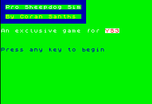

| Download Smash .TAP |
| Professional Sheepdog Simulator - Coran Sanths
|
|  This is it! An exclusive game for YS3, this is the world's most powerful and accurate simulation of being a sheepdog. Guide five sheep into their pen to win the game in this never-before-seen test of skill, dexterity and courage. Good luck - you'll need it! Controls Q - Up A - Down O - Left P - Right |
| Back to Cover |